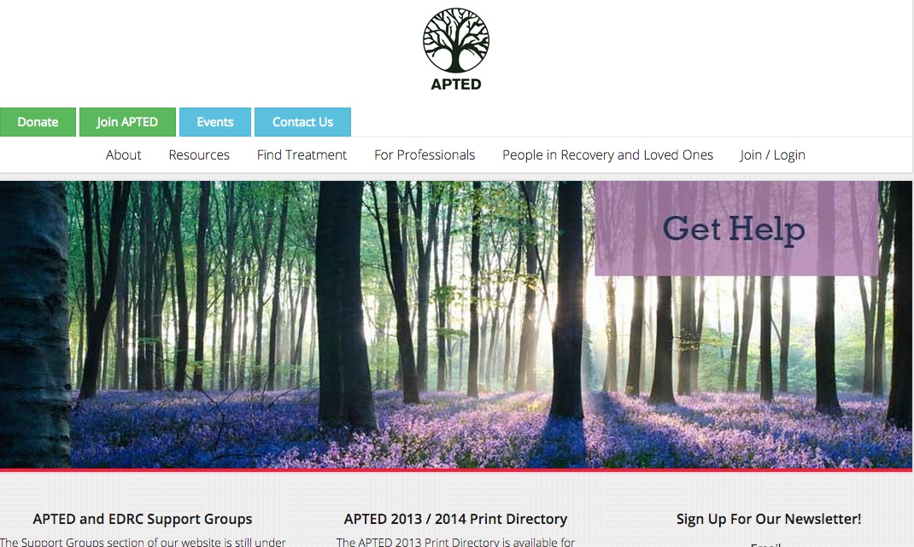
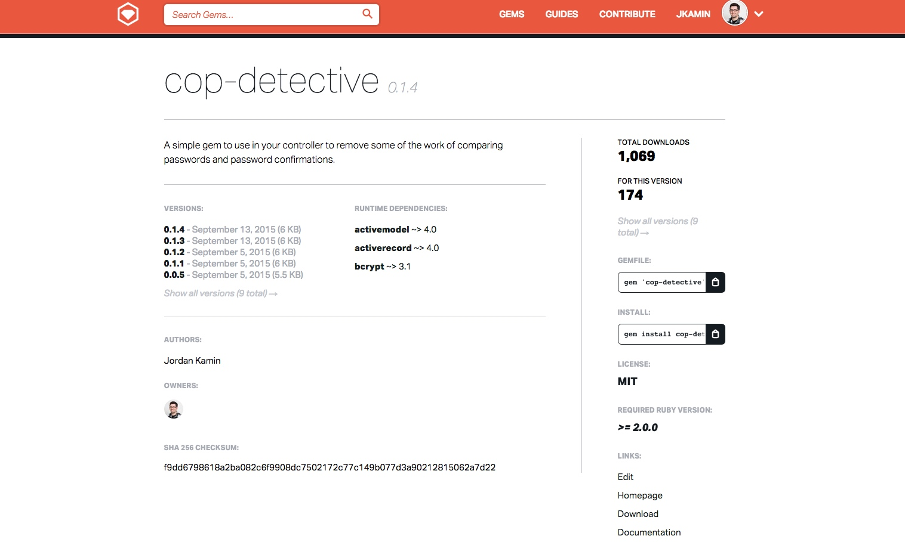

The Association for Professionals Treating Eating Disorders (APTED) website is built with a Rails API backend, a React frontend, and uses bootstrap for styling.

cop-detective is a gem built for use with rails 4 that takes some of the work out of validating passwords before updating or saving user data.
Nebulaforcego.com is a CMS built in rails for the band Nebula Force, Go! It leverages the youtube and google calendar apis to aid the band in managing content.